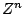
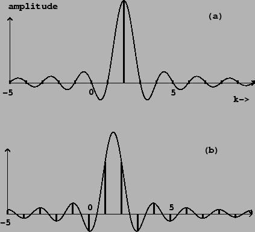
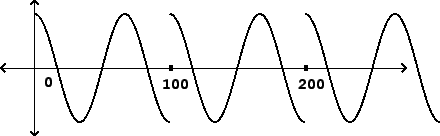
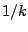
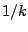

We can use the phase shift formula above to find the Fourier transform of
any complex sinusoid  with frequency  , simply by setting
, simply by setting
 in the formula and using the Fourier transform for DC:
in the formula and using the Fourier transform for DC:
|  |
If the sinusoid's frequency  is an integer multiple of the fundamental
frequency
is an integer multiple of the fundamental
frequency  , the Dirichlet kernel is shifted to the left or right by an
integer. In this case the zero crossings of the Dirichlet kernel line up with
integer values of
, the Dirichlet kernel is shifted to the left or right by an
integer. In this case the zero crossings of the Dirichlet kernel line up with
integer values of  , so that only one partial is nonzero. This is pictured
in Figure 9.3 (part a).
, so that only one partial is nonzero. This is pictured
in Figure 9.3 (part a).
|  |
Part (b) shows the result when the frequency  falls halfway between two
integers. The partials have amplitudes falling off roughly as  in both
directions, measured from the actual frequency
falls halfway between two
integers. The partials have amplitudes falling off roughly as  in both
directions, measured from the actual frequency  . That the energy
should be spread over many partials, when after all we started with a single
sinusoid, might seem surprising at first. However, as shown in Figure
9.4, the signal repeats at a period
. That the energy
should be spread over many partials, when after all we started with a single
sinusoid, might seem surprising at first. However, as shown in Figure
9.4, the signal repeats at a period  which disagrees with the
frequency of the sinusoid. As a result there is a discontinuity at the
beginning of each period, and energy is flung over a wide range
of frequencies.
which disagrees with the
frequency of the sinusoid. As a result there is a discontinuity at the
beginning of each period, and energy is flung over a wide range
of frequencies.